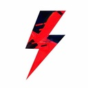

⚡️Европа не может выбрать переговорщика для диалога с Путиным, — The Guardian. Попытки европейских стран договориться о едином представителе для переговоров с Россией обернулись…

Топор Live @toporlive872 постов⚡️Детям запретили общаться с ИИ-ботами, имитирующими дружбу и романтические отношения, — Associated Press. В американском штате Нью-Йорк приняли соответствующий закон. Компании…
⚡️Получить польское гражданство станет сложнее, — RMF 24. Власти Польши предлагают увеличить срок проживания в стране, повысить требуемый уровень знания польского языка с B1 до…
⚡️Германия развернёт в Литве системы РЭБ для слежения за Россией и Беларусью, — Reuters. Немецкие военные будут отслеживать работу российских и белорусских радаров, собирая данн…
⚡️Партия Нетаньяху «Ликуд» сохраняет лидерство на выборах после подсчета 97,3% бюллетеней, — данные ЦИК.
⚡️Даванков раскритиковал идею фильтровать музыку с помощью ИИ В думском комитете по защите семьи обсудили контент для молодёжи. Нина Останина спросила Роскомнадзор, почему не за…
⚡️16-летний подросток прокатил полицейского на капоте машины, пытаясь скрыться от погони в Адыгее, — МВД. В Майкопе инспекторы заметили автомобиль, водитель которого грубо наруш…
⚡️Литва введёт всеобщую воинскую повинность с 2032 года, — LRT со ссылкой на президента Науседу. Ежегодное число призывников увеличится с 5 до 7,5 тысячи человек. Женщины по-пре…
⚡️Два человека погибли, один пострадал при обрушении скальной породы у входа в музей в Каппадокии, — губернатор провинции в эфире телеканала A haber.
⚡️Скала обрушилась в популярной у туристов турецкой Каппадокии, есть погибшие и раненые, — СМИ. Крупные валуны рухнули у входа в популярный среди туристов музей под открытым неб…
⚡️Речь о переговорах по Украине с Европой сейчас не идет, — помощник президента РФ Ушаков. Но рано или поздно придется говорить с людьми, которые нам не очень симпатичны.
⚡️Михаила Светова* заочно приговорили к одному году исправительной колонии общего режима, — СМИ. Суд признал его виновным в уклонении от обязанностей иноагента. Светов* уехал из…